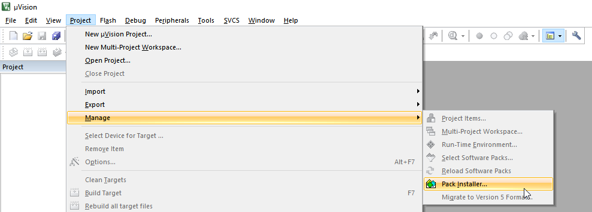
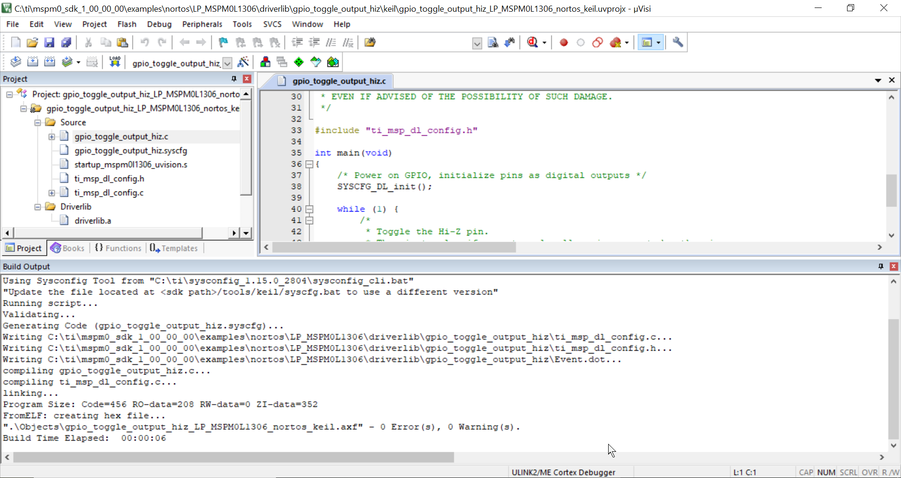

适用于 Keil 的 MSPM0 SDK 快速入门指南¶
1. 引言¶
本指南旨在帮助用户完成初始设置并展示运行其第一个示例应用。本指南说明了如何安装 MSPM0 SDK 和适用于 Keil 的 MSPM0 CMSIS-Pack，并列出了开始使用第一个应用所需的各种其他工具。
2. 先决条件¶
用户应已下载以下各项：
Keil MDK-Arm with uVision v5.38a 或更高版本，带有 Arm Clang 编译器 v6.16 或更高版本。
3. 安装 MSPM0 CMSIS-Pack¶
在 uVision 中，依次选择 Project → Manage → Pack Installer
 在“Pack Installer”中，选择“Texas Instruments”器件，并选择相应的 MSPM0 系列。 然后在右侧，安装器件特定包以及可能需要的任何其他包。

批准许可条款
“Pack Installer”应显示支持 MSPM0 器件。

4. 安装 MSPM0 SDK¶
下载并安装最新 MSPM0 SDK。请注意，SDK 安装程序有 Windows 版、Linux 版和 MacOS 版。以下步骤显示在 Windows 版中，但 Linux 或 MacOS 版也应遵循类似方法。
执行安装程序。点击 Next。

选择 Installation Directory 并点击 Next。注意安装目录，默认情况下为
c:\ti，SDK 将安装在C:\ti\mspm0_sdk_<version>\。此路径在以下部分中称为<MSPM0_SDK_INSTALL_DIR>。
点击 Next

完成安装后，点击 Finish。

5. 将 SysConfig 与 Keil IDE 配合使用¶
此 SDK 包括 SysConfig 元数据的初始版本，可用于评估 MSPM0 SDK 的用户体验。
有关安装 SysConfig 并将其与 MSPM0 配合使用的详细说明，请参阅在 SDK 工具指南中提供的将 SysConfig 与 MSPM0 配合使用。
6. 在 Keil uVision 中导入和编译 SDK 示例¶
在 Keil uVision 中，依次选择 Project → Open Project

在位于
<MSPM0_SDK_INSTALL_DIR>/examples/的 SDK 示例中导航至 Keil 文件夹，并打开 .uvprojx 工程文件。例如<MSPM0_SDK_INSTALL_DIR>/examples/nortos/LP_MSPM0L1306/driverlib/gpio_toggle_output_hiz/keil/gpio_toggle_output_hiz.uvprojx。
工程已准备好进行编译和调试。

7. 使用 Keil 在 MSPM0 上进行下载和调试¶
Keil 支持多种调试器。此部分说明了如何在 CMSIS-DAP 模式下使用 XDS-110 调试工具。 XDS-110 集成在 MSPM0 LaunchPad 中。
7.1 使用 CMSIS-DAP¶
右键点击工程文件夹，转至在先前步骤中导入的 Keil 工程的选项窗口
在“Debug”选项卡中点击“Settings”按钮，并确保设置与下图所示设置一致。
点击“Flash Download”选项卡，并确认相应说明与下图一致。 如果不一致，请点击“Add”按钮，并选择相应的 MSPM0 MAIN 选项。 器件类型为“On-chip Flash”。

点击窗口底部的“OK”关闭窗口，并应用对调试设置所做的所有更改

按下“Load”按钮使用工程刷写器件，如下所示

将鼠标悬停在主屏幕的“Debug”选项卡上，选择“Start/Stop Debug Session”

这将启动调试会话。
8.已知问题和常见问题解答 （FAQ）¶
请参阅 SDK 中的已知问题和 FAQ。